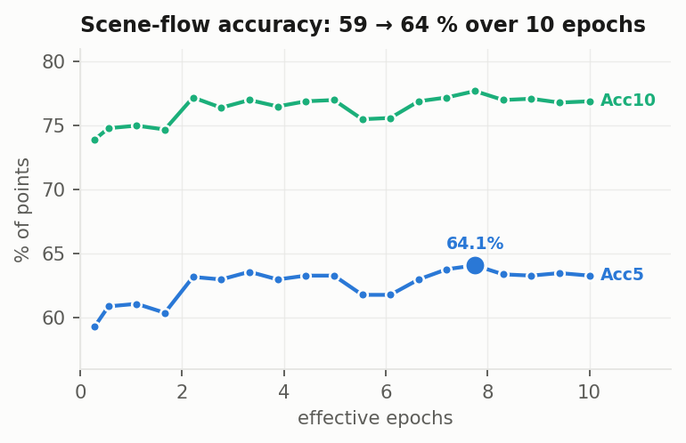
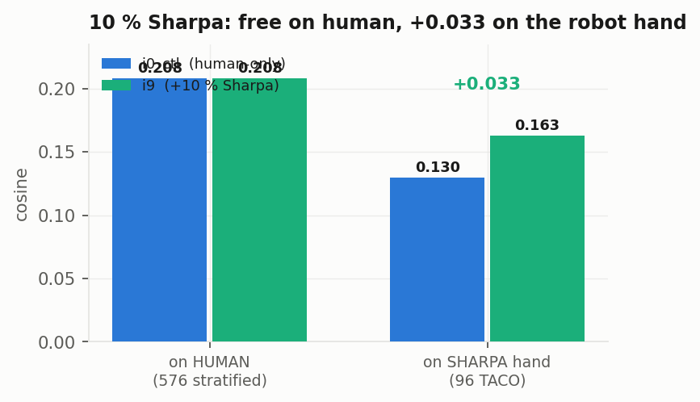

Scale-up, cross-embodiment, closed-loop, contact loss
3D-WAM · four workstreams, one fair axis: effective epochs
Lab meeting
2026. 09. 03 Presented by 김범준 (beomjun)
Overview
[TL;DR] Zero-shot loop closes but stalls short; new arms land tonight.
GR-1 closed loop: runs, no success
ADE flat past 2 effective epochs
320M, Sharpa-10 %, soft-IoU: land tonight
120M p7 @ 10.00 eff ep — taco ep 2488 "brush the plate with the roller", self-predicted, 1 s chunks, full episodeGR-1 zero-shot closed loop — hand→apple distance, 3 episodes × 720 steps: approaches, then stalls 16–26 cm short
two bases, never mixed — ieval: stratified 576 chunks (96 × 6 datasets), zero predictor 7.97 cm · Sharpa: 96 TACO chunks, zero 4.99 cm · record ~/3d-wam/P-SERIES.md
Method: the GR-1 tabletop arena, read from source
Their arena, their metric, their command — so the number compares.
78 registered tasks, e.g. PnPAppleToDrawerClose — "pick up the apple, place it into the drawer and close the drawer" · figure from robocasa/robocasa-gr1-tabletop-tasks, credited
Decode is not the bottleneck: 1 mm of point noise costs 1.7°, 3 mm costs 5.0°
SUPERSEDED 09-03
GR-1 action-layout re-measure the loop ran end-to-end — see Results ③
arm IK (7 joints) + hand IK (6-dim coupled controller) drive the GR-1 in closed loop
MuJoCo · robosuite 1.5.1 · GR1ArmsAndWaistFourierHands · 17 DoF + 11 hinge joints/hand · ABSOLUTE joint-position actions · 20 Hz, 0.4 s replan vs our 1 s
Results
Scale-up and training length
19 checkpoints: direction improves, placement does not
Cross-embodiment transfer
GR-1 zero-shot closed loop
Contact auxiliary loss
Flat from 2.21 eff ep — 7.46–7.94 cm, non-monotone · best 7.46 @ 7.75, endpoint 7.71 @ 10.00

Acc5 peaks at the same point — 64.1 % @ 7.75 vs 63.3 % at 10.00 · Acc10 77.7 → 76.9 %
Verdict · ieval 576 (zero 7.97 cm): best is 140k = 7.75 eff ep, not the endpoint — Acc5 64.1 % / ADE 7.46 cm vs 63.3 % / 7.71 @10.00. Over 2.21 → 10.00 ep cos 0.234 = 76.5° → 0.295 = 72.8°, motion 53 → 70 %, ADE flat: epochs buy direction, not placement
eff ep = steps × effective batch ÷ 577,948 curated chunks · degrees are arccos(cos); the ladder's own mean-angle column reads 68.4–68.8° over the same span
Rollouts · single-chunk open-loop
120M @110k · 6.09 eff ep · single-chunk open-loop · 10 frames = 1 s taco, chunk 29206, "empty the cup with the kettle"120M @110k · 6.09 eff ep · single-chunk open-loop · 10 frames = 1 s arctic, chunk 1988, "use the capsulemachine"120M @110k · 6.09 eff ep · single-chunk open-loop · 10 frames = 1 s oakink2, chunk 18292, "Tidy up the desktop after drawing."
WILL UPDATE
p7 @ 7.75 eff ep (140k, the best ckpt) these three chunks · rendering now, job 152656
placeholder · the 6.09-epoch clips are not re-used as a stand-in
same chunk, camera and seed across arms, so the comparison is by construction · results/iviz/i5_110k/clips/ · val = held-out takes (5 % sequence hash), same tasks & objects as train
Rollouts · taco ep 2488 · 6.09 vs 10.00 eff ep
120M @110k · 6.09 eff ep · taco ep 2488 · "brush the plate with the roller" teacher-forced · 1 s chunks · full episode120M p7 @180,608 · 10.00 eff ep · taco ep 2488 · "brush the plate with the roller" teacher-forced · 1 s chunks · full episode120M @110k · 6.09 eff ep · taco ep 2488 · "brush the plate with the roller" self-predicted · 1 s chunks · full episode120M p7 @180,608 · 10.00 eff ep · taco ep 2488 · "brush the plate with the roller" self-predicted · 1 s chunks · full episode
same episode, camera and seed · columns = training length, rows = previous chunk GT vs own output · val = held-out takes, tasks & objects seen in train
Rollouts · teacher-forced vs self-predicted · arctic, oakink2
120M @110k · 6.09 eff ep · arctic ep 56 · "use the mixer" teacher-forced · 1 s chunks · full episode120M @110k · 6.09 eff ep · arctic ep 56 · "use the mixer" self-predicted · 1 s chunks · full episode120M @110k · 6.09 eff ep · oakink2 ep 1486 · "turn on the lamp, open laptop, power on the laptop" (text unseen in train) teacher-forced · 1 s chunks · full episode120M @110k · 6.09 eff ep · oakink2 ep 1486 · "turn on the lamp, open laptop, power on the laptop" (text unseen in train) self-predicted · 1 s chunks · full episode
same episode, camera and seed · rows = previous chunk GT vs own output · 10.00-ep counterparts not rendered · val = held-out takes, tasks & objects seen in train
Results
Scale-up and training length
Cross-embodiment transfer
10 % Sharpa is free on human, +0.033 cos on the robot
GR-1 zero-shot closed loop
Contact auxiliary loss

Free on human (0.208 both, 78.0°), +0.033 on the robot hand (0.130 → 0.163, 82.5° → 80.6°)
Lands ≈ 22:00 KST 09-03 (+8.7 h from 13:20) · fixed paired estimator — not comparable to the CIs on this slide
Verdict · on human Δcos −0.001 [−0.008, +0.005] (2/3-subsample estimator, see corrections) — free (ieval 576) · on the Sharpa 96-TACO basis ADE 7.04 → 6.00 cm, that basis's own zero being 4.99. Control is i0_ctl, not i5 — i5 also drops hot3d, confounding composition
pairing fixes sequence, chunk start, task, object and scene, so the measured gap is the hand alone · both arms matched at ~32k steps with hot3d in
Rollouts · human vs Sharpa hand, two lengths, two sizes
120M @110k · 6.09 eff ep · taco s33 "cut the bowl with the spatula" human hand120M p7 @180,608 · 10.00 eff ep · taco s33 "cut the bowl with the spatula" human hand320M p4b @4k · 1.77 eff ep · taco s33 "cut the bowl with the spatula" human hand · only 320M weights that exist120M @110k · 6.09 eff ep · taco s33 "cut the bowl with the spatula" Sharpa hand, zero-shot120M p7 @180,608 · 10.00 eff ep · taco s33 "cut the bowl with the spatula" Sharpa hand, zero-shot320M p4b @4k · 1.77 eff ep · taco s33 "cut the bowl with the spatula" Sharpa hand, zero-shot · run cancelled at 2.66 ep
same chunk, camera and seed · columns 1–2 = training length · 320M at 1.77 eff ep — NOT a size comparison · val = held-out takes, tasks & objects seen in train
first successes with a human-only model — no fine-tuning, no retargeter
on most tasks the hand stops short: the controller executes a fraction of each plan
Contact auxiliary loss
2 / 117 episodes succeed (KettleToPlate, ObjectsTieredBasketToCounter, 1/3 each) · median final distance 23 cm · 5 tasks fail in the simulatorAsks 12–14 cm/chunk, executes 5–7 cm less · arm-IK residual 24–35 mm
Setup · 44 PnP tasks · right Fourier hand · human tag · 120M p7 @ 10.00 eff ep · 3 eps × 720 steps · replan every 4 frames · benchmark success flag
pipeline: scene + robot as ONE labeled point set (1024 pts) → total scene flow → per-link Procrustes → arm IK + hand IK · ckpt 180,608 · rate_arm 0.15 · fixtures not pointed
Rollouts · GR-1 zero-shot closed loop · ego view
episode 0 · 720 steps · 90 replans · final hand→apple 16 cm · success noepisode 1 · 720 steps · 90 replans · final hand→apple 24 cm · success noepisode 2 · 720 steps · 90 replans · final hand→apple 26 cm · success no
PnPAppleToDrawerClose · right Fourier hand · human tag · 120M p7 @ 10.00 eff ep, no fine-tuning · 20 Hz sim, 36 s per clip · 4 frames executed per 1 s plan
Rollouts · GR-1 · ego view vs the model's input · episode 0
left: ego view · right: the 1,024 points the model sees (object orange, right hand green) with each replan's predicted 1 s flow as fading ghosts + 40 arrows · synchronized by step
camera fixed per episode, over the right shoulder (+35° azimuth so hand and object do not overlap) · 90 replans · 20 Hz · owner judges what the plan asks for vs what the arm delivers
Rollouts · GR-1 · ego view vs the model's input · episodes 1, 2
episode 1 · final hand→apple 24 cmepisode 2 · final hand→apple 26 cm
same rendering as the previous slide · predicted flow overlay updates every 8 steps
The verdict above is numeric only — no λ arm has been seen yet
Verdict · close this workstream → withdrawn 09-03 (soft-IoU form training, see corrections). ieval 576 @ 1.11 eff ep: ADE 8.63 / 8.62 / 8.78 cm vs the i5 baseline's 8.15 — monotonically worse in λ, and no interval clears zero. Ninth architecture addition falsified; the levers stay data composition and training length
λ was picked by measured gradient share (0.1 → 0.73, rejected; 0.03 → 0.22), then swept anyway · harness check: one ckpt under two tags gave Δcos +0.000 [0, 0]
Status · 2026-09-03 14:20 KST
Nothing landed by 10:00 — three bugs, all fixed; three arms running, one queued.
pending · λ 0.1 ≈22:10 · λ 1.0 ≈22:30 KST 09-03 (preemptible) · λ 0.001 no start time
Discussion — owner only:
GR-1 stall — controller delivers a fraction of the plan → controller first, model later
Sharpa confound — TACO-only data → TACO-matched control before any robot claim
λ 0.001 — no start time on background QoS → wait for λ 0.1 / 1.0 (≈22:10 / 22:30), then promote or drop
grey italic rows = not landed · no numbers from the four arms due at 10:00 — see corrections (appendix) · GR-1 clip verification: owner · evals as each arm lands (agent)
Appendix · corrections on the record (rev7, 2026-09-03)
The "/s3data 10× slowdown" was CPU starvation, not storage — the launcher requested no CPUs → 1 core per 2-GPU job → 3.1 s/step at 13–29 % GPU util; with 48 cores it is 0.29 s/step at 100 %. S3 was never the bottleneck.
Two launcher/trainer bugs cost the night — /scratch staging without preserved mtimes (manifest newer than its motion_valid cache → every arm crashed at start) and a per-rank wall-clock checkpoint decision under DDP (rank barrier vs gradient all-reduce → NCCL abort). Both fixed and verified; no 09-03-morning results exist.
"Close the contact workstream" (rev6) is withdrawn — the contact term is validated non-inert (8.6 % of the loss at λ 0.1); the new soft-IoU form is what is training (jobs 5470–5472).
Every cross-embodiment CI published before 09-03 was a 2/3 subsample — e.g. paired gap −0.052 [−0.091, −0.015]: xeval keyed chunks by batch position, collapsing 384 pairs to 258. Fixed (keyed by sequence:start). Tonight's x10_sharpa interval is a different estimator — not comparable to the old ones.
All evaluators now carry a zero-motion reference — z5 / z10 / zADE / zFDE; contact zIoU / zprec / zrec. Contact IoU must be read against its own zero column.
Appendix · ladder · evidence · GR-1 run · cut list
PnPAppleToDrawerClose (robocasa GR-1 tabletop) · right Fourier hand · human tag · 120M p7 @ 10.00 eff ep (ckpt 180,608) · no fine-tuning, no retargeter · 3 episodes × 720 steps · replan every 4 frames (90 replans) · 0/3.
Pipeline
scene + robot as ONE labeled point set (1024 pts) → predicted total scene flow → per-link Procrustes → arm IK (7 joints) + hand IK (6-dim coupled controller).
Numbers
per-chunk predicted hand motion 12–14 cm vs 5–7 cm execution error · arm-IK residual 24–35 mm · palm fit ≤2 mm · final hand→apple 16 / 24 / 26 cm (ep0 / 1 / 2).
Clips
episode_0{0,1,2}.mp4, ego view, NOT embedded — awaiting owner verification.
Cut: the full 19-row ladder dump · per-clip ADE tables · the 24-task split dump · H200 sizing charts · MLXP pod-spec iterations · the rev6 corrections list (7.75-ep best, the 110k dip, Out% dropped as ≈100 % by construction, bf16 live — in git history) · the GR-1 ego clips until the owner has seen them · per-episode GR-1 step logs · the ang° note (mean per-point angle ≠ arccos mean cos).